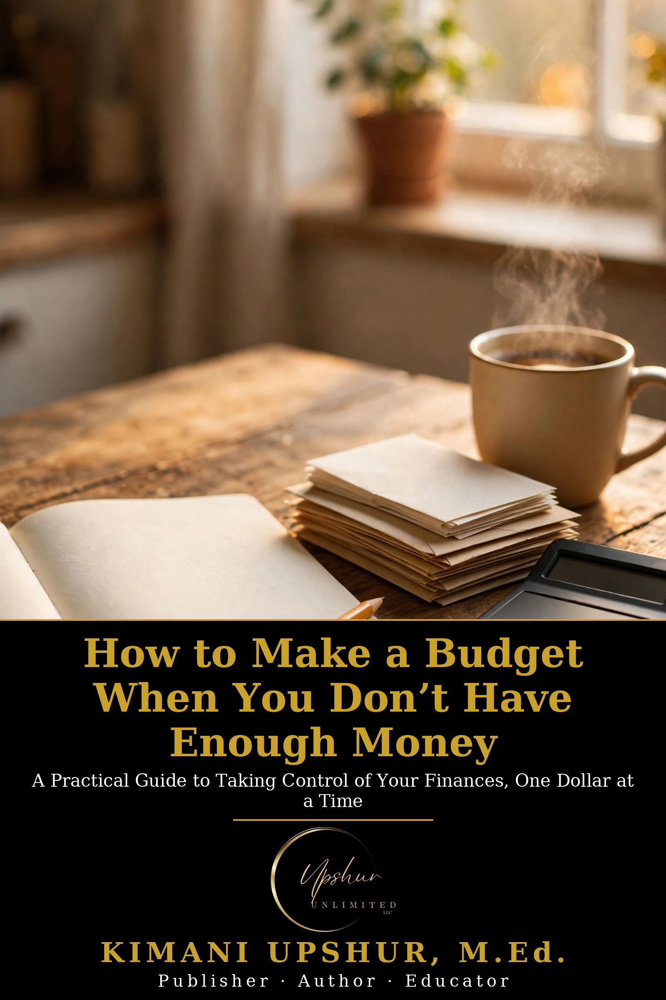

Home / Free Books / How to Make a Budget When You Don’t Have Enough Money

What You’ll Get
- See your whole money picture on one page — income, bills, due dates, and the leaks costing you money for nothing
- The priority ladder: exactly who to pay and who to call first when you can’t pay everything, with a word-for-word call script
- A survival budget built on the Four Walls — housing, utilities, food, transportation — plus a version for irregular and gig income
- Honest debt guidance: minimum-payment math, your rights with collectors, and where free nonprofit help actually is
- Five printable worksheets and a 30-day action plan that fits a working person’s schedule
Who This Is For
Adults whose income barely covers — or doesn’t cover — their bills: paycheck-to-paycheck households, gig and tip workers with income that changes every week, single parents, and anyone tired of money advice written for people with money to spare.
What’s Inside
- How to Use This Book
- Introduction: Broke Is Not the Same as Broken
- Chapter 1: Where Does It All Go? Seeing Your Real Money Picture
- Chapter 2: The Survival Budget: When Income Barely Covers Expenses
- Chapter 3: First Things First: Housing, Food, Transportation, Utilities
- Chapter 4: Budgeting When Your Income Won’t Sit Still
- Chapter 5: Debt Without the Fairy Tales
- Chapter 6: Cutting Costs Without Cutting What Keeps You Alive
- Chapter 7: Help That Actually Exists: Assistance and Community Resources
- Chapter 8: Finding Additional Income — Legitimately
- Chapter 9: The Starter Emergency Fund: $100, Then $500, Then $1,000
- Chapter 10: Your 30-Day Financial Action Plan
- Worksheets (Money Snapshot · Survival Budget · Bill Priority Ladder · Debt Inventory · 30-Day Expense Tracker)
- Conclusion: One Dollar at a Time
Questions
Is it really free? Yes. The complete ebook is free to download from Upshur Unlimited LLC, permanently — not a sample, not a trial.
Do I need to give my email? No. The download requires no email address and no account. (A separate, optional mailing-list invitation appears elsewhere on the site; it is never a condition of downloading.)
What formats? EPUB, PDF, and DOCX.
Keep Reading
Ready to go deeper? Readers of this book also use Budgeting Made Simple for a full budgeting system and Debt Made Simple for a complete debt-payoff walk-through — both available in the Upshur Unlimited LLC bookstore.
More free books are on the way — see the Free Books & Resources department.